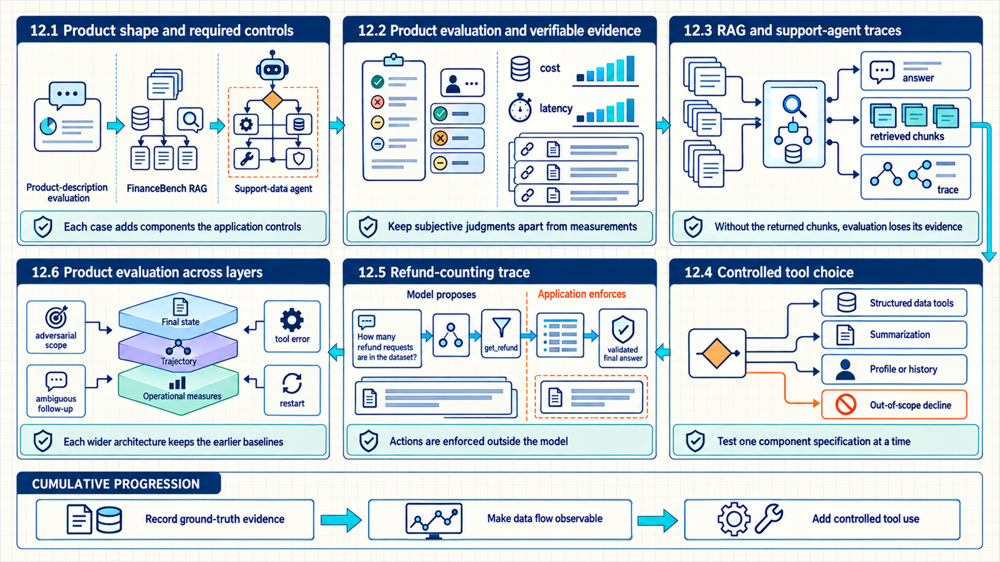
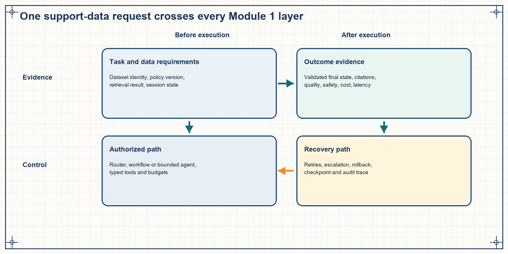

12 Integrated AI system cases
The preceding chapters taught the model, evaluation, retrieval, orchestration, tools, and memory as separable mechanisms. Three practical examples reveal why that separation matters: each wider system depends on evidence and specifications produced by the narrower one. Evaluation, retrieval, and controlled tool use combine into one implementation and review method that traces a support-data request across every product boundary.

The map compares a product-description evaluator, a RAG pipeline that cites selected evidence, and a controlled support-data agent through their complete records.
12.1 Product shape and required controls
The first example begins with a rubric before generation and ends with a calibrated judge. The second adds an external evidence pipeline and separates retrieval quality, answer correctness, and faithfulness. The third moves the same discipline into an interactive data agent with routing, tools, persistent state, an iteration cap, and MCP exposure.
| Practical example | System represented | Evidence produced | Engineering lesson |
|---|---|---|---|
| Evaluation pipeline | Product-description generator plus human reviewers and judge models | Rubric, per-example outputs, latency, cost, human scores, judge-model scores, agreement, experiments | Success criteria and lineage precede model-call optimization |
| Grounded retrieval | FinanceBench PDF index, retriever, grounded generator, and evaluation pipeline | Naive baseline, retrieved chunks, correctness, faithfulness, page-hit at k, controlled experiments | Failures can be localized to indexing, retrieval, context assembly, or generation |
| Controlled data agent | Bitext analyst with router, tools, ReAct graph, persistence, CLI, and MCP server | Routes, tool traces, observations, final state, iteration fallback, restart tests, memory and protocol checks | Autonomy depends on typed capabilities, controlled execution, state responsibility, and end-state evaluation |
Dependency lesson
An agent does not replace evaluation or RAG engineering. It adds a decision loop around tools, some of which may be retrieval systems, and the resulting trajectories still need task-specific evaluation.
The examples also widen the unit of failure. A generated description can fail at the prompt, model, or evaluator. A grounded answer adds ingestion, indexing, retrieval, context assembly, and citation. A data agent adds routing, tool execution, state transitions, budgets, and persistence. The evidence record grows with the system because each additional component creates a new causal explanation for the same visible failure.
12.2 Product evaluation and verifiable evidence
A generated product description has no single reference string that captures quality. Without explicit rubric levels and a pass rule, human review and model judging cannot be compared or repeated. A complete evaluation pipeline therefore moves from criteria to generation records, a manual baseline, controlled improvement, a judge schema, and agreement analysis.
- Rubric levels describe
good,ok, andbadbehavior for fluency, grammar, tone, length, grounding, latency, and cost. - A cumulative pass bar and any automatic-failure criteria are fixed before model output is inspected.
- Each generated row retains its prompt and model configuration together with description, latency, input tokens, and output tokens.
- Programmatic cost and manual criterion labels provide separate objective and subjective measurements on a stable sample.
- A controlled experiment changes one factor, states the expected effect, and reruns the same evaluation slice with complete lineage.
- A structured-output judge covers subjective criteria only after its explanations are checked and its criterion-level verdicts are compared with human labels.
The evidence boundary includes explanatory notes, executable prompts and model setup, data-processing functions, and row-level manual and automated scores. Failed experiments remain part of the record because a negative result constrains later hypotheses and prevents an ineffective change from being rediscovered.
| Judge-model field order | Reason |
|---|---|
| Explanation first | The judge must inspect evidence against the criterion before committing to a label. |
| Verdict second | The enum constrains the final decision after the reasoning context has been produced. |
| Programmatic cost and latency outside the judge | Measured quantities should not be delegated to a subjective model. |
| Criterion-isolated judge runs | Isolated calls reveal cross-criterion interference and may change human agreement. |
The example produces two distinct outputs: a product description and an evaluation record. The description is user-visible; the evaluation record contains the rubric version, generation lineage, criterion labels, cost, latency, judge rationale, and agreement evidence. Keeping them separate allows the product output to remain concise without losing the information required for diagnosis.
12.3 RAG and support-agent traces
The evaluation example scored model output given structured product facts. FinanceBench introduces source documents whose relevant facts are not reliably available from model memory. A traced RAG pipeline captures each stage of the evidence path so a poor answer can be attributed to its actual component.
- A no-retrieval run on a fixed question slice establishes correct, partially correct, wrong, and refused baseline outcomes.
- Dataset filtering limits ingestion to referenced filings, while
doc_name, company, period, and zero-indexedpage_numbermetadata are attached before chunking. - The baseline index records its embedding model, chunk size, overlap, and persistent FAISS storage configuration.
answer_with_ragreturns the answer and retrieved chunks together; document and page metadata remain in context, and an empty retrieval produces an explicit outcome.- The same questions pass through naive and RAG paths so retrieval changes without changing the evaluation set.
- Final correctness, grounding faithfulness, and evidence-page hit remain separate per-question measurements before aggregation.
- One-variable experiments vary prompt, model,
k, chunk size, or reranking while retaining the same comparison slice.
Code example 12.1 - a RAG return specification preserves retrieval evidence.
Code example: Code example 12.1 - a RAG return specification preserves retrieval evidence.
def answer_with_rag(query: str, k: int = 4) -> dict:
chunks = vectorstore.similarity_search(query, k=k)
context = format_with_metadata(chunks)
answer = generation_model.invoke(
grounded_prompt(question=query, context=context)
)
return {
"answer": answer,
"retrieved_chunks": [
{
"text": chunk.page_content,
"doc_name": chunk.metadata["doc_name"],
"page_number": chunk.metadata["page_number"],
}
for chunk in chunks
],
}Why the returned chunks matter
If the function returns only the answer, retrieval evaluation, citation verification, debugging, and later reranking experiments lose the evidence that produced the output.
The retrieval trace is the connecting record. It stores the question, source filters, ranked chunks, selected context, source identifiers, answer, and citations. A wrong answer with a missed labeled page points toward retrieval; a wrong answer with correct evidence points toward generation or validation. The same trace supports later reranking and chunking experiments without relying on memory of what the pipeline returned.
12.4 Controlled tool choice
The RAG example used one evidence pipeline with a fixed request path. A support-data analyst introduces a choice among structured data tools, unstructured summarization, profile or history operations, and an out-of-scope decline. A dedicated router and small typed tool set keep that flexibility inside an auditable graph.

Every arrow represents an enforced specification: identity and scope enter the router; tools return typed observations; only verified results and permitted memory reach the final answer.
| Layer | Application-enforced specification | Example acceptance test |
|---|---|---|
| Input and identity | Question, user ID, session ID, dataset scope | A restarted session restores only the matching conversation |
| Router | Structured, unstructured, or out-of-scope enum | Sports and CRM questions decline without data-tool calls |
| Tools | Names, descriptions, typed inputs, bounded results | get_refund filter followed by row count gives the expected total |
| Agent graph | Allowed nodes, iteration cap, fallback, trace | A forced loop ends gracefully between 10 and 15 iterations |
| Episodic state | Conversation checkpoint keyed by session | show three more resolves the previous category after restart |
| Semantic profile | Distilled user facts stored separately | A corrected preference supersedes the old fact |
| MCP boundary | At least three discoverable tools and client instructions | A client lists and invokes an allowed tool with the documented transport |
| Evaluation | Task final state, route, tools, cost, latency, reliability | Repeated trials reproduce correct counts and safe declines |
The bounded analyst extends standard RAG retrieval without discarding grounding. Retrieval or dataset tools still return evidence with identifiers, while the agent adds a policy-controlled choice about which capability to invoke next. A final-state validator compares the answer with tool results, and the trajectory records route, calls, observations, budgets, and stop reason.
12.5 Refund-counting trace
The practical request How many refund requests are in the dataset? is evaluated against the Bitext customer-support dataset introduced in Section 9.8: labeled rows, an authorized analyst, and a loaded index. The desired answer is a count grounded in current rows, not a number guessed by the model.
- The host creates state containing the normalized question, user identity, session identity, dataset version, and remaining step budget.
- The router returns
structured; an out-of-scope branch is therefore not entered. - The agent selects
filter_by_intentwith the canonical intentget_refund. The application validates the enum and executes the filter. - The observation returns a bounded row reference or row set. The agent applies
count_rowsto that bounded result and returns a typed count with provenance. - The tool returns a typed integer with dataset and filter provenance.
- The final-answer node formats the count and its scope. A validator checks that the number equals the tool result and that no unsupported explanation was added.
- The trace records router output, both tool calls, observations, latency, cost, model and tool versions, and the verified final state.
The same request expressed as state transitions.
Code example: The same request expressed as state transitions.
state0 = {
"question": "How many refund requests are in the dataset?",
"route": None,
"row_ref": None,
"count": None,
"steps_left": 12,
}
state1 = route(state0) # route = "structured"
state2 = call("filter_by_intent", intent="get_refund")
state3 = call("count_rows", rows=state2.row_ref)
state4 = verify_final(
answer=f"{state3.count} refund requests",
expected_count=state3.count,
)What the model does not own
The model does not authorize dataset access, invent the intent taxonomy, execute the filter, count rows, write durable memory, or decide that the run satisfies acceptance criteria. It proposes actions and language inside those application controls.
12.6 Product evaluation across layers
A mature evaluation set combines ordinary questions, adversarial scope tests, ambiguous follow-ups, empty results, tool errors, restart scenarios, and memory corrections. It reports end state first, then diagnostic trajectory and operational measures.
| Dimension | Representative metric | Failure question |
|---|---|---|
| Task outcome | Exact count, supported summary, correct decline, or completed state | Did the product achieve the user-visible objective? |
| Routing | Per-class precision, recall, and confusion matrix | Did the request enter the right policy and tool path? |
| Tool use | Tool-name accuracy, argument validity, result handling | Was the right capability used correctly? |
| Grounding | Claim support and evidence attribution | Does each factual claim follow from authorized observations? |
| Reliability | Success rate and interval across repeated trials | Is the behavior reproducible rather than a lucky trace? |
| Operations | p50/p95 latency, timeouts, token and tool cost | Can the product meet its service and budget target? |
| Safety and privacy | Unauthorized-call rate, approval compliance, deletion tests | Did the system enforce permissions and follow retention, correction, and deletion rules? |
Outcome, component, and operational evaluation serve different decisions. Outcome metrics determine whether the request was completed safely and correctly. Component metrics identify which router, retriever, tool, validator, or memory layer contributed to a failure. Operational metrics determine whether the same behavior is reliable and affordable at the required latency.
A release decision links the three layers per case and per slice. Aggregate task success is accompanied by route confusion, tool-argument validity, evidence support, retry and fallback rates, p50 and p95 latency, cost, and policy events. The combined view prevents a high answer score from hiding brittle routing, excessive retries, or unsafe authorization behavior.
Chapter checkpoint
The examples form a product sequence: evidence is defined first, its path becomes observable next, and controlled tool use is added only afterward. Each wider system retains the earlier baselines, records richer lineage, and introduces new component tests rather than replacing old ones.